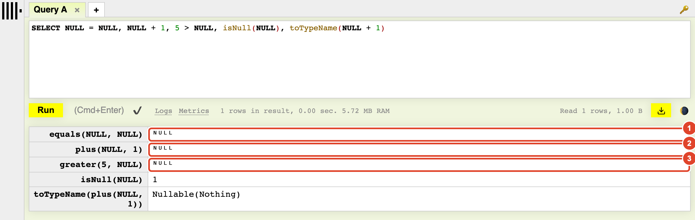
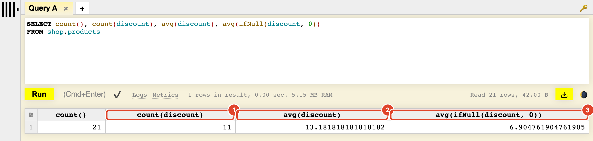

NULL
Отметка «значения нет». Любая операция с ней даёт NULL, функции подсчёта её пропускают.
ПримерNULL + 1 → NULL; count(discount) → 11 из 21.
Где§1, §3, §4
Справочник по ClickHouse · модуль 1 · первые данные
Глава 1.3
В главе — что хранит ClickHouse, когда значения нет: значение по умолчанию или отметку NULL. Разберём, как NULL меняет вычисления и подсчёты, как его заменить и сколько стоит столбец, где он разрешён.
Суть за две минуты
Обычный столбец хранит значение по умолчанию: 0, пустую строку, 1970-01-01. Nullable умеет хранить NULL — «значения нет».
0 — это скидка ноль процентов. NULL — скидку не назначали.
NULL + 1 — NULL, NULL = NULL — тоже NULL. Подсчёты NULL пропускают.
Средняя скидка: 13,18 % без NULL и 6,90 %, если NULL считать нулём.
Рядом со столбцом хранится маска «пусто или нет» — байт на строку.
На 10 миллионах цен: +25 % объёма при чтении.
Зачем это знатьВ главе 1.1 у ноутбука p-001 в столбце discount стояло NULL. Разберёмся, что это значит и чем отличается от нуля.
В магазине 21 товар. Скидку назначили одиннадцати, у остальных десяти её нет совсем:
Пустое место — это не «скидка 0 %». Скидка 0 % значит «решили не снижать цену». Пустое место значит «вопрос о скидке не решали». Для отчёта это разные факты, и в ClickHouse их можно хранить по-разному.
Что есть что: анкета — строка таблицы, графа «Детей» — столбец. Ноль — настоящее значение, его можно складывать. Пустая графа — NULL: считать с ней нельзя, о ней можно только сказать «пусто».
Зачем это знатьВ обычном столбце пустоты не бывает: в каждой строке лежит какое-то значение. Посмотрим, какое.
Если при вставке значения нет, обычный столбец получает значение по умолчанию своего типа. Его показывает функция defaultValueOfTypeName:
| Тип | По умолчанию |
|---|---|
UInt32 и другие числа | 0 |
String | пустая строка '' |
Date | 1970-01-01 |
DateTime | 1970-01-01 00:00:00 |
Bool | false |
Nullable(UInt8) | NULL |
SELECT defaultValueOfTypeName('Date') возвращает 1970-01-01.
Зачем этот шагПосчитаем цену со скидкой. У половины товаров скидки нет — что получится в их строках?
ДелаемSELECT NULL = NULL, NULL + 1, 5 > NULL, isNull(NULL), toTypeName(NULL + 1)

NULL дают NULL; isNull(NULL) даёт 1">Любая операция с NULL даёт NULL. Логика такая: если одно из чисел неизвестно, то неизвестна и сумма, и ответ на вопрос «больше ли». Даже два NULL нельзя назвать равными — это два разных неизвестных (рамка 1). Проверить, пусто ли значение, можно только функцией isNull — она возвращает 1 или 0.
Это видно на настоящем расчёте цены. У p-001 скидки нет, и цена со скидкой тоже стала NULL, хотя товар продаётся за 42 990 ₽:
┌─product_id─┬──price─┬─discount─┬────final─┐ 1. │ p-001 │ 42990 │ ᴺᵁᴸᴸ │ ᴺᵁᴸᴸ │ 2. │ p-002 │ 51490 │ ᴺᵁᴸᴸ │ ᴺᵁᴸᴸ │ 3. │ p-003 │ 67900 │ 10 │ 61110 │ 4. │ p-004 │ 114990 │ 5 │ 109240.5 │ └────────────┴────────┴──────────┴──────────┘
первые три значения на кадре — NULL, isNull(NULL) — 1. Как вернуть цену в строки без скидки — в шаге 3.
У голого NULL в запросе тип Nullable(Nothing) — «пусто, тип неизвестен». В столбце тип всегда конкретный: Nullable(UInt8), Nullable(String).
То же правило действует в условиях отбора. WHERE discount = NULL не найдёт ни одной строки: сравнение с NULL всегда даёт NULL, и строка не проходит. Пустые находят через IS NULL. Условия разбирают главы 1.6 и 2.1.
Зачем этот шагСредняя скидка по магазину — частый вопрос к отчёту. С NULL ответ зависит от того, как его считать.
ДелаемSELECT count(), count(discount), avg(discount), avg(ifNull(discount, 0)) FROM shop.products
По словам: count(discount) — сколько строк, где discount не пустой. avg — среднее. ifNull(discount, 0) — «скидка, а если пусто — 0»; подробно в шаге 3.

Функции подсчёта пропускают NULL. count(discount) вернул 11 из 21 (рамка 1). avg(discount) делит сумму скидок 145 на 11 и получает 13,18 (рамка 2). Если пустые считать нулями, делить придётся на 21 — выйдет 6,90 (рамка 3).
Оба числа верные, но отвечают на разные вопросы. Ошибка — взять первое, когда спрашивали второе. Поэтому, увидев Nullable в DESCRIBE, сначала решите, что значит пустота в этом столбце.
на кадре 11, 13.18… и 6.90….
Зачем этот шагЧтобы NULL не портил расчёт, его заменяют подходящим значением прямо в запросе. Для этого три функции.
| Функция | Что делает | Пример | Ответ |
|---|---|---|---|
ifNull(x, y) | x, а если x пустой — y | ifNull(NULL, 'нет') | нет |
coalesce(a, b, c…) | первое непустое из списка | coalesce(NULL, NULL, 3) | 3 |
nullIf(x, y) | обратное: NULL, если x равен y | nullIf(0, 0) | NULL |
Вернём цену товарам без скидки: пустую скидку заменим нулём.
SELECT product_id, price, discount,
price * (100 - ifNull(discount, 0)) / 100 AS final
FROM shop.products LIMIT 4┌─product_id─┬──price─┬─discount─┬────final─┐ 1. │ p-001 │ 42990 │ ᴺᵁᴸᴸ │ 42990 │ 2. │ p-002 │ 51490 │ ᴺᵁᴸᴸ │ 51490 │ 3. │ p-003 │ 67900 │ 10 │ 61110 │ 4. │ p-004 │ 114990 │ 5 │ 109240.5 │ └────────────┴────────┴──────────┴──────────┘
у p-001 в final снова 42990. Здесь замена нулём верна: нет скидки — платят полную цену.
Бывает наоборот: в данных пустота записана нулём или пустой строкой, и она портит среднее. avg(nullIf(qty, 0)) пропустит нули так же, как NULL. Ещё один частый случай — деление: x / nullIf(y, 0) при нулевом y даст NULL вместо бесконечности.
Зачем этот шагНоль или пустая строка подходят не всегда. Столбцу можно задать своё значение по умолчанию — например, «не указан» для города.
Для этого нужна своя таблица. Создадим её в песочнице одной командой и вставим три строки. Устройство CREATE TABLE разбирает глава 1.4, а INSERT — глава 1.5. Сейчас нужны только четыре строки со столбцами.
CREATE TABLE sandbox.visits (
id UInt32,
city String DEFAULT 'не указан',
qty UInt16,
promo Nullable(String)
) ENGINE = MergeTree ORDER BY id;
INSERT INTO sandbox.visits (id) VALUES (1);
INSERT INTO sandbox.visits (id, city, qty, promo) VALUES (2, 'Казань', 3, 'FIRST5');
INSERT INTO sandbox.visits VALUES (3, 'Омск', 1, NULL);
SELECT * FROM sandbox.visits ORDER BY id;По словам: первая вставка называет только столбец id, остальные три сервер заполняет сам. ORDER BY id в конце выводит строки по порядку номеров.
┌─id─┬─city──────┬─qty─┬─promo──┐ 1. │ 1 │ не указан │ 0 │ ᴺᵁᴸᴸ │ 2. │ 2 │ Казань │ 3 │ FIRST5 │ 3. │ 3 │ Омск │ 1 │ ᴺᵁᴸᴸ │ └────┴───────────┴─────┴────────┘
В первой строке видны все три способа заполнить пропуск:
DESCRIBE sandbox.visits покажет у city заполненные столбцы, которые в главе 1.1 были пустыми: default_type = DEFAULT, default_expression = 'не указан'.
в строке 1 — не указан, 0 и NULL.
Попробуйте вставить NULL туда, где он не разрешён: INSERT INTO sandbox.visits (id, city) VALUES (5, NULL). Ошибки не будет. Сервер молча запишет вместо NULL значение по умолчанию — для city это не указан, для qty был бы 0. Так работает настройка input_format_null_as_default, она включена по умолчанию. При загрузке это выручает, но пустоту так можно потерять незаметно.
В DEFAULT можно писать и выражение: created DateTime DEFAULT now() запишет момент вставки. Таблицу после опытов можно удалить: DROP TABLE sandbox.visits — глава 1.8.
Зачем этот шагВозможность хранить NULL не бесплатна. Посмотрим, как Nullable устроен внутри и во что обходится на 10 миллионах строк.
Nullable — это обычный столбец плюс второй, служебный: маска пустоты, по байту на строку. Чтение и вычисления проходят по обоим. Замер на ценах web.events: одни и те же 10 324 592 числа в столбце UInt32 и в столбце Nullable(UInt32).
В памяти Nullable занимает на четверть больше — это и есть маска. На диске разницы почти нет: в этом замере NULL нет ни одного, маска состоит из одних нулей и сжимается почти в ничто. Сумма считается на 2 мс дольше.
вывод: Nullable стоит заметно, но не катастрофически. Ставьте его там, где пустота что-то значит.
Таблица из двух столбцов p UInt32 и pn Nullable(UInt32) заполнена ценами из web.events. Размеры взяты из system.columns, время — clickhouse-client --time, девять запусков SELECT sum(p) и SELECT sum(pn). Обе суммы равны 229007045950. После замера таблица удалена.
Nullable-столбец нельзя без особой настройки ставить в ключ сортировки таблицы — ORDER BY в CREATE TABLE, глава 1.4. Сервер ответит ошибкой Sorting key contains nullable columns.
Зачем это знатьРешение принимают для каждого столбца при создании таблицы. Вопрос один: отличается ли «нет данных» от значения по умолчанию по смыслу?
| Столбец | Пусто значит | Выбор |
|---|---|---|
shop.products.discount | скидку не назначали; 0 % — другое решение | Nullable(UInt8) |
shop.orders.promo | промокод не вводили | Nullable(String); подошла бы и пустая строка |
shop.order_items.qty | не бывает: позиция без количества — ошибка | UInt16 |
sandbox.visits.city | город не сообщили | String DEFAULT 'не указан' |
web.events.duration_ms | 10 млн строк, у каждого события время есть | UInt32 |
для каждого столбца вы можете ответить, чем пустота отличается от нуля. Не отличается — обычный тип. Отличается — Nullable или DEFAULT с понятным значением.
Зачем это знатьВ MongoDB у пустоты два вида, в ClickHouse — один.
discount: nullУ документа поле может отсутствовать совсем. Это два разных случая.При переносе данных из MongoDB в ClickHouse оба случая — «поля нет» и null — превращаются в одно: NULL или значение по умолчанию. Загрузчик стенда так и сделал: товар, у которого в MongoDB не было поля discount, получил в ClickHouse NULL.
Найдите строку, похожую на то, что видите у себя, и раскройте её.
В выражении участвует пустое значение. Замените его: ifNull(discount, 0) (§5).
Сравнение с NULL всегда даёт NULL. Пишите discount IS NULL или isNull(discount).
Скидка 10 % у двух товаров, а «не равно 10» вернуло 9 строк вместо 19. Десять строк с NULL выпадают из обоих условий: и из «равно», и из «не равно». Нужны и они — допишите OR discount IS NULL (глава 2.1).
avg пропускает NULL и делит на число непустых. Решите, какое среднее нужно, — §4.
Столбец не Nullable, и сервер подставил значение по умолчанию без ошибки (§6). Нужен NULL — объявите столбец Nullable.
Столбец из ORDER BY таблицы должен быть обычного типа. Уберите Nullable или выберите другой столбец для ключа (глава 1.4).
shop.orders оформлено с промокодом?SELECT count(promo) FROM shop.orders — 40 из 120. count(promo) считает только непустые значения.
NULL = NULL и почему?NULL. Каждый NULL — неизвестное значение, и про два неизвестных нельзя сказать, равны ли они. Пустоту проверяют функцией isNull или условием IS NULL.
age UInt8 у части людей возраст не указан. Чем плох такой тип?Пустые получат 0, и средний возраст станет меньше настоящего. Нужен Nullable(UInt8): тогда avg(age) посчитает только известные значения.
Nullable «на всякий случай»?Каждый такой столбец хранит маску — байт на строку, на ценах web.events это +25 % объёма при чтении. Кроме того, NULL придётся учитывать в каждом расчёте и условии, а в ключ сортировки такой столбец не поставить.
isNull(x) -- 1 или 0
x IS NULL x IS NOT NULL
count(x) -- только непустые
ifNull(x, 0)
coalesce(a, b, c)
nullIf(x, 0) -- 0 → NULL
discount Nullable(UInt8)
city String DEFAULT 'не указан'
числа 0 · String ''
Date 1970-01-01 · Bool false
defaultValueOfTypeName('Date')
Отметка «значения нет». Любая операция с ней даёт NULL, функции подсчёта её пропускают.
ПримерNULL + 1 → NULL; count(discount) → 11 из 21.
Где§1, §3, §4
Обёртка над типом, которая разрешает столбцу хранить NULL. Рядом со значениями хранит маску пустоты — байт на строку.
Примерdiscount Nullable(UInt8), promo Nullable(String).
Где§2, §7
Значение, которое столбец получает, если при вставке его не указали. У каждого типа своё: 0, пустая строка, 1970-01-01.
Примерqty UInt16 без значения → 0.
Где§2, §6
Часть описания столбца, которая задаёт своё значение по умолчанию — число, строку или выражение.
Примерcity String DEFAULT 'не указан', created DateTime DEFAULT now().
Где§6
Функции, которые подставляют значение вместо NULL. ifNull берёт одну замену, coalesce — первое непустое из списка.
ПримерifNull(discount, 0) вернул цену товарам без скидки.
Где§5
'', 1970-01-01. Своё задают через DEFAULT.Nullable хранит NULL — «значения нет», отдельно от нуля.NULL = NULL. Пустоту проверяют isNull и IS NULL.count(x) и avg(x) пропускают NULL — решите, какой ответ нужен.ifNull и coalesce подставляют замену, nullIf делает NULL из значения.web.events. Ставьте его там, где пустота что-то значит.Дальше — глава 1.4: как устроен CREATE TABLE, которым мы уже создали sandbox.visits, и что такое движок таблицы.